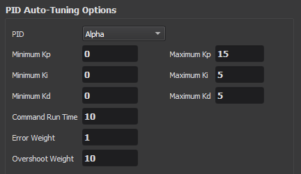
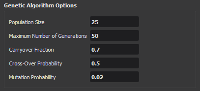
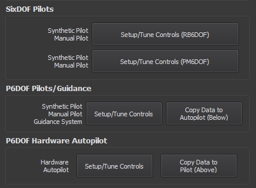
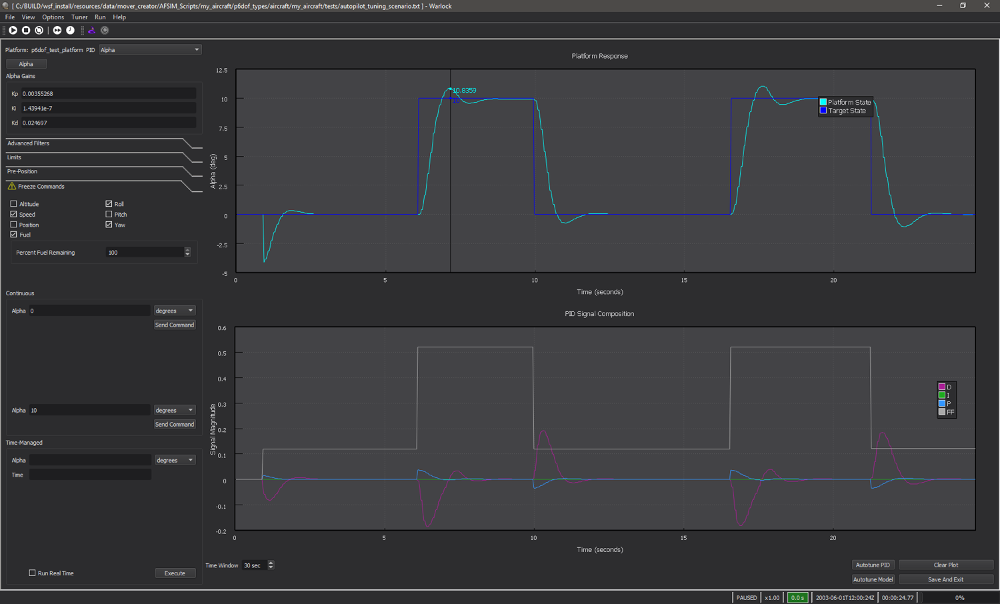

Autopilot¶
Note
This page is disabled for vehicles with a cNO_CONTROL configuration.
Note
This page is disabled if only a Guided Mover is being generated.
Mover Creator along with Warlock give users the ability to setup and tune the control PIDs of the vehicle’s piloting systems. There are five sections to the Autopilot page.
Pilots/Guidance control setup/tuning
Hardware Autopilot control setup/tuning
G-Load Limits options
3D rendering of the vehicle
PID Auto-Tuning Options¶
The PID Auto-Tuning Options section of the Autopilot page allows users to define the minimum and maximum boundaries for Kp, Ki and Kd. It also provides the user the ability to set the command run time, error and overshoot weights. All of these user defined settings are copied into Warlock and used by the P6DOF Tuner and SixDOF Tuner plugins. The PIDs available to tune are:
Alpha*
Vertical Speed
Pitch Angle
Pitch Rate
Flight Path Angle
Delta Pitch
Altitude
Beta*
Yaw Rate
Yaw Heading
Roll Rate*
Delta Roll
Bank Angle
Roll Heading
Forward Acceleration
Speed
Taxi Forward Acceleration*
Taxi Speed*
Taxi Heading*
Taxi Yaw Rate*
*Not available for PM6DOF vehicles.
Genetic Algorithm Options¶
The user can set the values used by the Tuner plugins’ genetic algorithm. The genetic algorithm is used to help find the optimal values for the PIDs.
Pilots/Guidance and Hardware Autopilot¶
Once the user is satisfied with his or her values setup in the PID Auto-Tuning Options and Genetic Algorithm Options sections, they need to run the actual Tuner to get a tuned pilot. The list of pilot/guidance types to be tuned appears to the left of the Setup/Tune Controls button. The available pilots/guidance list was defined by the user on the Pilots/Controls page. To proceed with tuning the PIDs the user presses the Setup/Tune Controls button found in the Pilots/Guidance and Hardware Autopilot sections.
Once the user presses the Setup/Tune Controls button Warlock will be launched and present the user with either the P6DOF Tuner of the SixDOF Tuner, depending on which vehicle type is selected. For helpful tips on tuning a vehicle, visit the “Best Practices” section in the P6DOF Tuner documentation.
Mover Creator uses the P6DOF Tuner settings to configure tuning for both P6DOF and SixDOF vehicles. (Eventually, this will be replaced by the SixDOF Tuner settings as P6DOF is phased out of support.) The user can verify that his or her PID settings are being used in Warlock by selecting Options -> Preferences and selecting P6DOF Tuner in the preferences dialog.
Once the user has tuned the PIDs, he or she needs to press the Save And Exit button in Warlock. This will save the values for the tuned PIDs of this vehicle. The autopilot configuration, along with the tuned PID values that were saved from Warlock can be found in the autopilot_config.txt script file located in the \resources\data\mover_creator\AFSIM_Scripts\<vehicle_name>\p6dof_types\<vehicle_type>\<vehicle_name>\controls\ directory where <vehicle_name> is the name the user gave the vehicle, and <vehicle_type> is either aircraft or weapons.
Pilots/Guidance¶
The user can copy these tuned PID values to the Hardware Autopilot by pressing the Copy Data to Autopilot (Below) button in this section. This will copy the values from autopilot_config.txt to the hw_autopilot_config.txt file located in the directory mentioned above.
Hardware Autopilot¶
The user can copy these tuned PID values to the other Pilots/Guidance by pressing the Copy Data to Pilot (Above) button in this section. This will copy the values from hw_autopilot_config.txt to the autopilot_config.txt file located in the directory mentioned above.
G-Load Limits¶
Note
These settings may also be set in the Pilots/Controls page.

This section allows the user to specify the g-load limits. Once either the “Pilots/Guidance” or “Hardware Autopilot” button is pressed, a dialog will appear where the user can enter the desired values as shown below.

Editing these values is equivalent to changing pitch_gload_min, pitch_gload_max, and yaw_gload_max, respectively.